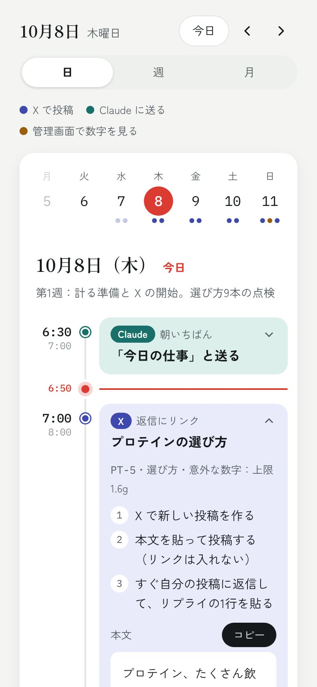

PROJECT 004 / WEB / 運用カレンダー
CALENDAR
やることを、時間の上に並べる。
X の投稿とサイトの運用を、いつ・どこで・何をするかで見えるようにするカレンダー。X の投稿の順番表から自動で作り、日・週・月で切り替えて見られる。予定を開くと、手順と、そのまま貼れる投稿文が出る。自分の運用のための道具で、いまはベータ版。
ベータ版

01 / 今の状態
ここまでと、次の一歩。
- ここまで
- X の順番表と投稿文から、カレンダーを自動で作る仕組みを作った
- 時刻つきの予定リスト（日）・時間の表（週）・月のカレンダーを切り替えられるようにした
- 予定を開くと手順と投稿文が出て、コピーと「済み」の記録ができるようにした
- 動きを軽くして、文字を大きくした（ベータ版）
- 次にやること
- 10月の運用で毎日使い、使いにくい所を直していく。
02 / 制作の記録
進んだ日のこと。
-
運用カレンダーの
ベータ版を 作った。 X の投稿とサイトの運用を、いつ・どこで・何をするかで見えるようにした。日・週・月で切り替えられて、予定を開くとそのまま貼れる投稿文が出る。
03 / ほかの制作